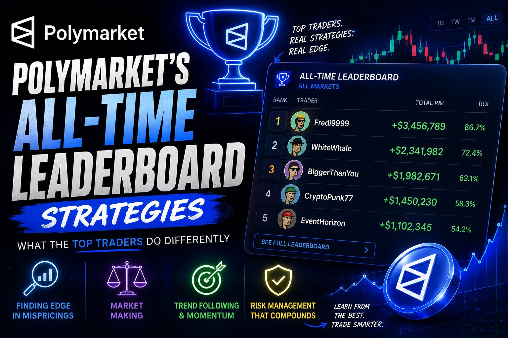

Polymarket's All-Time Leaderboard : The 3 Trading Styles Behind the Top Traders

The short answer
Pull up the first ten names on Polymarket's all-time leaderboard and you'd expect ten versions of the same strategy. You don't get that. You get three completely different species of trader living on the same platform: a handful of dormant 2024 election-cycle whales who placed a tiny number of enormous, directional bets and then went quiet; a set of hyperactive sports grinders who've made tens of thousands of small trades across live soccer, tennis, and esports markets; and a brand-new wave of Traders that appeared out of nowhere in June 2026 and immediately put millions of dollars on single World Cup matches. Same leaderboard, three totally different games being played.
The 2024 election whales: theo4, fredi9999, len9311238
Three Traders on this list — theo4, fredi9999, and len9311238 — share a fingerprint: they joined in the second half of 2024, they've made almost no trades since (14, 45, and 7 all-time predictions respectively), they currently hold $0 in open positions, and each one's single biggest win runs into the millions ($8.3M, $9.7M, and $4.3M). That's not a trading style you build from scratch. It's the signature of someone who made one giant conviction bet, cashed out, and never came back.
Fredi9999 in particular isn't an anonymous name — Bloomberg reported that Polymarket itself confirmed the account belonged to a French trader with a background in financial services, and that Fredi9999 was one of four linked Traders — alongside Theo4, PrincessCaro, and Michie — that together held tens of millions of dollars in bets on a Trump victory in the 2024 U.S. election. Chainalysis later traced the network to as many as eleven wallets funded and cashed out through the same pattern, and estimated the trader's total profit at somewhere between $48 million and $85 million once Trump won. Polymarket's investigation found no evidence of manipulation, describing it instead as a large directional bet based on the trader's own read of the race.
Len9311238 fits the same cohort by timing (joined October 2024) and by shape (seven trades, one enormous win, zero current exposure), though it isn't publicly confirmed as part of the same French-trader network. The strategy here isn't really a "strategy" in the day-trading sense at all — it's closer to a single large-scale, high-conviction wager on a binary political outcome, sized to a level that would be reckless for anyone without genuinely strong personal conviction about how the vote would go.
The high-frequency sports grinders: swisstony, rn1, kch123
The opposite end of the spectrum is occupied by swisstony and rn1, who have made 110,675 and 71,077 predictions respectively — a volume of trading that only makes sense if you're treating Polymarket the way a sportsbook regular treats in-play betting. Both Traders run heavy, overlapping positions across live soccer matches (Eredivisie, Premier League, Serie A, Chinese Super League), Roland Garros tennis, and Counter-Strike esports — often taking several different markets on the exact same match at once: moneyline, both-teams-to-score, and three or four different over/under lines, each sized in the $5,000–$30,000 range rather than the seven-figure bets the election whales placed.
This is a volume game, not a conviction game. Individual position sizes are modest and diversified across dozens of live events simultaneously, which spreads risk thin but also means no single bad call can do much damage — swisstony's daily P/L on the day of writing was a comparatively tame +$28,215, and rn1 was sitting on a small drawdown of -$46,289. kch123 runs a lighter version of the same playbook — 2,614 total predictions, a single $1.1M career-best win, and by far the most profile traffic of anyone on this list at 931,000 views, suggesting a trader (or account) that's built some public notoriety around its sports picks specifically.
The World Cup ambush bettors: mintblade, fishalive, frostrizz, and sparklingwater123
The strangest cluster on the list is also the newest. mintblade, fishalive, frostrizz, and the account originally listed as sparklingwater123 (now displaying as blunttedge — worth flagging, since these anonymous whale Traders do occasionally rebrand their display name) all opened their Traders in June 2026, right as the FIFA World Cup kicked off, and every one of them has made four trades or fewer, total.
What they did with those handful of trades is the interesting part. Each account went almost immediately to a single high-stakes match and put a genuinely enormous position on it: mintblade committed roughly $2.7M across three positions on Saudi Arabia vs. Uruguay (fading a Uruguay win and backing the Saudi Arabia spread, both of which moved heavily in its favor), frostrizz put nearly $4M into a single "Korea Republic does not win" position against Mexico, and blunttedge (the account behind sparklingwater123) built a $7.4M position fading Japan against Sweden, up over $250,000 on the day. Fishalive is the extreme case: exactly two trades, ever, zero dollars currently in open positions, and an all-time profit figure of $9,061,008 — someone who found one opportunity, sized it enormously, won, and walked away completely.
None of these four Traders had any real profile traffic before their trades (most sit under 1,000 views), which tells you they weren't building a following — they were moving quickly and quietly into single-match mispricings around a major live tournament, then either holding the position or cashing straight out.
What ties the three groups together
Despite looking nothing alike, all three groups are really doing the same underlying thing: matching their bet size and frequency to how confident they are and how often a genuine edge shows up. The election whales found one edge they believed in deeply and bet it once, at massive size. The sports grinders don't believe any single match gives them a huge edge, so they spread modest size across thousands of live markets and let volume do the work. The World Cup Traders sit in between — a handful of high-conviction bets, but concentrated on single tournament matches rather than a single multi-year political outcome. Reading the "leaderboard" as one undifferentiated list of winners misses this entirely; the Traders at the top got there through almost opposite approaches to risk.
Disclaimer: This post is for informational purposes only and is not financial or investment advice. Position values, profit figures, and trade counts reflect each account's public Polymarket profile at the time of writing and change continuously — always check live data at polymarket.com before drawing conclusions about any trader's current activity.